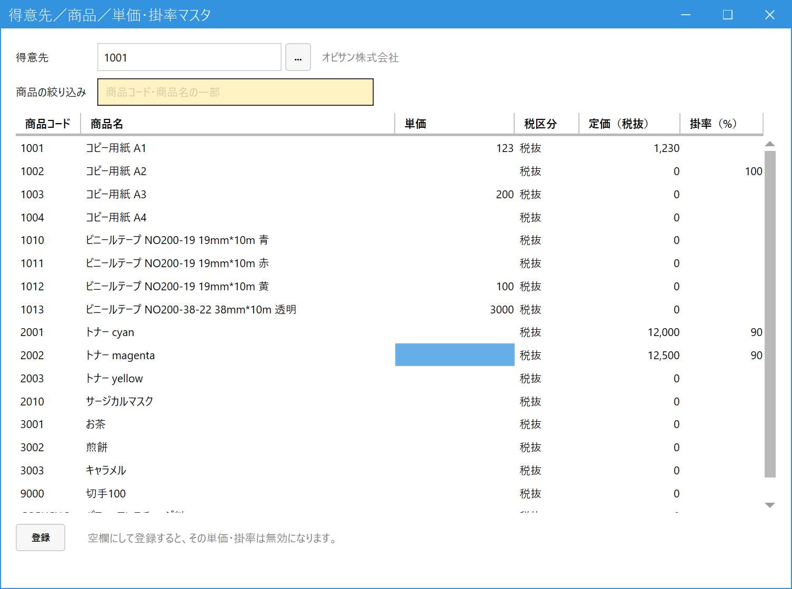

Set Customer-Specific Prices (Customer/Product Price & Rate Master / 得意先／商品／単価・掛率マスタ)
When to use this
Register price agreements for each customer, such as "sell this product to this customer at a special price" or "sell to this customer at 90% of the list price".
Once registered, when you add a product to an order or sales line, that price is filled in automatically.
Register price agreements for each customer, such as "sell this product to this customer at a special price" or "sell to this customer at 90% of the list price".
Once registered, when you add a product to an order or sales line, that price is filled in automatically.
1.How the unit price is decided
When you add a product to a line, the system looks for the unit price in the following order, and uses the first one it finds (you can still overwrite it on the line afterward).
- The customer-and-product unit price registered on this screen
- The rate registered on this screen (list price in Product Master x rate)
- The standard unit price (tax-exclusive / tax-inclusive) in Product Master (商品マスタ)
2.Select a customer
In the main menu, open Master Management (マスタ管理), then open Customer/Product Price & Rate Master (得意先／商品／単価・掛率マスタ). Enter a code in the Customer (得意先) field and press Enter (press Space or "..." to search). All active products for that customer are listed.

- Customer (得意先): The customer you want to set prices for. After you select one, its name is shown next to the field.
- Product filter (商品の絞り込み): Narrow the display by part of a product code or product name (only the display changes; anything you entered on hidden rows is kept).
- Unit price (単価): The special price for this customer. This column and the rate column are the only ones you can edit.
- Tax unit (税区分): The basis for the price you enter. It is "Tax-inclusive (税込)" if the customer is tax-inclusive per line (per-transaction customer), otherwise "Tax-exclusive (税抜)".
- List price, excl. tax (定価（税抜）): The list price from Product Master (view only). For a product whose list price is 0, the unit price will be 0 even if you enter a rate.
- Rate, % (掛率（%）): The percentage of the list price (a whole number from 0 to 100). Example: 90 means 90% of the list price.
- Register (登録): Saves only the rows you changed, all at once.
3.Enter values and register
- Enter a unit price or a rate on the row of the product you want to set (if you enter both, the unit price takes priority).
- Press Register (登録). When it succeeds, the message "登録しました" (Registered) appears and the screen returns to empty.
- If you leave a field blank and register, that unit price or rate is deactivated (use this when you end the agreement). 0 is a valid value (it means selling for 0 yen).
- If you enter a value again on a deactivated row and register, it becomes active again with the new value.
- If you have unregistered changes and try to select a customer again or close the screen, a confirmation message appears.
- If you enter a value that is not a number or is out of range (for example, a rate over 100), a warning showing the product code appears and nothing is saved.